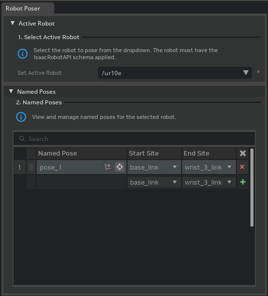
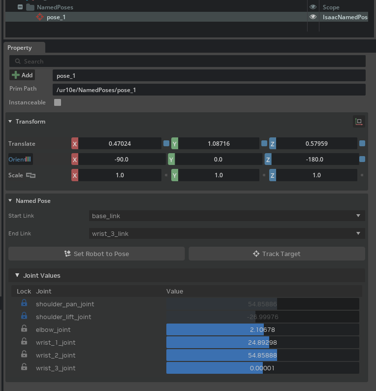
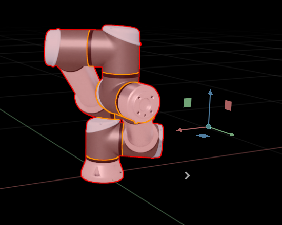
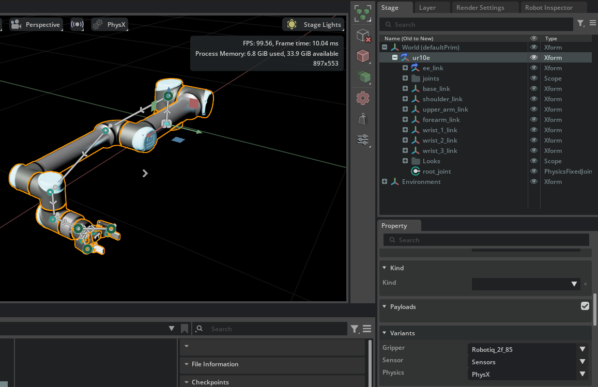
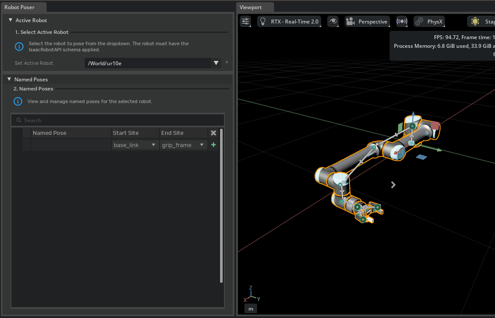
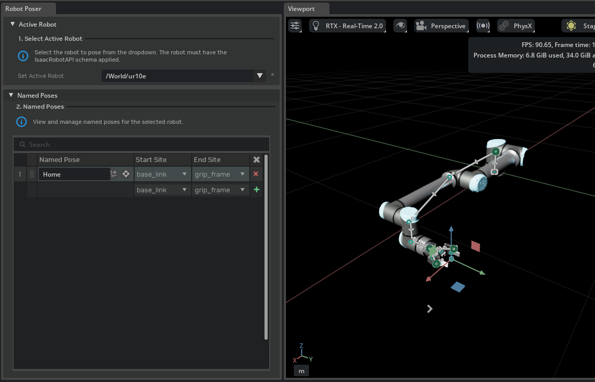
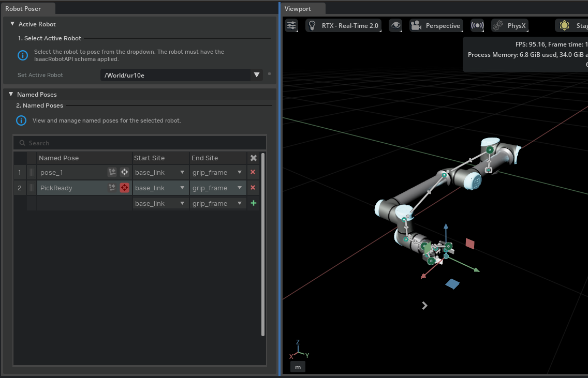

机器人位姿器#
Robot Poser 为带有 Robot Schema 的机器人创建、编辑和应用命名姿态。它将交互式 IK 目标工作流与持久化 USD 存储相结合，使得所创建的姿态随机器人资产一起保存，并可在 GUI 和代码中重放。
该功能分布在两个扩展中：
isaacsim.robot.poser– 用于 IK 求解、命名姿态 CRUD、关节状态应用以及 JSON 导入/导出的无头 API。isaacsim.robot.poser.ui– 包含 Robot Poser 窗口、Named Pose 属性面板以及IsaacNamedPoseprim 的自定义舞台图标的 GUI。
Robot Poser 窗口#
可通过 Tools > Robotics > Robot Poser 访问 Robot Poser 窗口。


机器人选择#
窗口顶部的下拉列表列出了当前舞台上所有应用了 IsaacRobotAPI 的 prim。选择一个机器人会将其现有的命名姿态加载到下方的表格中，并填充用于选择起始/结束连杆的可用站点候选项。
命名姿态表格#
窗口的主要区域显示机器人命名姿态的表格。每一行显示：
列 |
描述 |
|---|---|
命名姿态 |
可编辑的姿态名称。重命名会更新底层的 |
起始站点 |
运动链的起始连杆。可以是 Link 或站点。通常是机器人的基座。 |
结束站点 |
运动链的末端链接或站点。可以是 Link 或 site。通常指末端执行器坐标系或工具安装点。 |
注意
选择一个并非机器人固定坐标系、且在运动链过程中会影响机器人原点的站点，可能会导致机器人移动其基座原点。如果将来需要解决此问题，您可以手动重置机器人原点链接的姿态，并重新应用命名姿态。
注意
提示：为机器人的基座位置创建一个命名姿态，如果任何编辑操作导致机器人偏离初始位置，您可以使用它来将机器人重置到初始位置。
行操作#
每行提供以下操作按钮：


管理姿态#
添加 – 在机器人的
Named_Poses范围下创建一个新的IsaacNamedPoseprim，将其注册到isaac:robot:namedPoses关系中，并在表格中添加一行。新姿态会捕获所选起始/结束站点对的机器人当前关节状态。移除 – 从舞台中删除选定的姿态 prim，并将其从机器人的关系中移除。
搜索 – 按名称筛选表格行。
拖放 – 重新排序行，这也会重新排序
namedPoses关系中的目标。
模拟行为#
Robot Poser 的行为会根据模拟时间轴是否正在播放而有所不同。
模拟停止 – 通过直接在 USD 舞台上传送关节属性来应用关节值。机器人会立即跳转到目标姿态，并写入当前活动的编辑目标层。这是创作期间的预期模式：它允许你在没有物理干扰的情况下精确放置机器人，并生成适合保存的干净 USD 意见。
仿真运行中 – 关节值作为关节驱动目标写入。随后，物理引擎会在后续的仿真步骤中使机器人向请求的配置移动，同时遵循动力学、关节限位和接触力。由此产生的运动是平滑的，但如果力或碰撞阻止了运动，则可能无法到达精确的目标。目标姿态不会写入当前活动的编辑目标层，而是写入会话层，并在仿真停止时清除。如果你希望在仿真停止后保留该姿态，可以更改仿真设置，使其在停止时不重置机器人状态。
IK 跟踪遵循相同的规则：当跟踪处于活动状态且仿真停止时，每帧目标移动时都会瞬移关节；当仿真运行时，则更新驱动目标。
资产结构建议#
命名姿态及其写入的关节值在当前编辑目标层上创建。遵循 资产结构 指南：
命名姿态 prim (
IsaacNamedPose) 应与其余 Robot Schema 一起在 机器人架构层 中创建。它们描述了机器人的功能，并随资产一起移动。机器人基础姿态（机器人在舞台上的初始位置和方向）应在基础层中创建，或在应用于资产基础层（以避免数据丢失）和物理层之上的 专用创建层 中创建。这将场景级放置与机器人定义本身分开，并避免修改源层或物理层。
创建命名姿态时，如果未启用物理，请暂时将物理层添加为子层，以便解析运动链，然后在保存之前将其移除 – 这与应用 Robot Schema 本身时使用的工作流程相同。
命名姿态属性面板#
当在 Stage 面板中选中 IsaacNamedPose prim 时，可以在属性面板中编辑命名姿态属性。此面板提供对姿态的直接编辑，无需打开 Robot Poser 窗口。
选中命名姿态时，其变换会自动更新为机器人处于该命名姿态值时的正向运动学结果。


站点选择#
面板顶部的两个组合框用于控制 prim 上的 Start Link 和 End Link 关系。更改站点会重建运动链并重新计算下方的关节表。组合框支持搜索过滤，以便在复杂机器人上快速定位站点。
关节表#
在操作按钮下方，一个可编辑的关节表列出了起始链接和结束链接之间运动链中的每个关节：
列 |
控件 |
描述 |
|---|---|---|
锁定 |
切换图标 |
锁定或解锁关节。在 IK 求解期间，锁定（固定）的关节保持恒定；其 |
关节 |
标签 |
关节 prim 名称。 |
值 |
滑块 |
关节限位范围内的当前关节值。拖动滑块会更新 prim 上存储的 |
IK 失败可视化#
当 IK 跟踪处于活动状态且求解器无法收敛（目标位姿不可达）时，IK 链上的几何图元将绘制红色轮廓。当求解器再次成功或停止跟踪时，轮廓会自动清除。


示例：创建命名姿势#
本演练使用 Robot Poser 窗口和 IK 跟踪，在机械臂上创建三个命名姿势：初始位置、抓取准备姿态和放置目标。从一个包含至少一个应用了 IsaacRobotAPI 的机器人图元的舞台开始。
在本示例中，我们将使用来自 UniversalRobots 的 UR10e 机器人，并配备 Robotiq 2F-85 夹爪。
1. 在资源浏览器的 UniversalRobots 文件夹中找到 UR10e 机器人。
2. 将 UR10e 机器人拖放到舞台上，将其添加到舞台中。
3. 在属性面板的 Gripper Variants 中选择 Robotiq 2F-85 夹爪。

1. 选择机器人#
通过 Tools > Robotics > Robot Poser 打开 Robot Poser 窗口。在 Active Robot 下拉列表中，确保已选择 UR10e。


2. 添加“Home”姿态#
在机器人处于默认关节配置时，将起始链接选择为 `base_link`，将结束链接选择为 `grip_frame`。请注意，下拉列表中有两个 `base_link` 项。将鼠标悬停在名称上，以验证它是 ur10e 的 base_link，而不是夹爪的 base_link。在 Robot Poser 窗口中单击 Add。Named Poses 表中会出现一个新行。通过双击名称单元格，将其重命名为 Home。为运动链选择所需的 Start Site 和 End Site。
此姿态捕获机器人当前的关节状态，并作为已知的良好重置位置。


3. 添加带有 IK 跟踪的“Pick Ready”姿态#
再次单击 Add 以创建第二个姿态，并将其重命名为 PickReady。单击新行上的 Track Target 按钮（）以启用 IK 跟踪。
在跟踪处于活动状态时，在视口中选择 PickReady 命名姿态 prim，并使用平移/旋转控制柄将末端执行器拖动到所需的预抓取位置。您也可以通过变换属性面板更改姿态。随着 IK 每帧求解，机器人会实时更新其姿态。


一旦机器人到达目标姿态，再次单击 Track Target 以停止跟踪。关节值现在存储在 PickReady prim 中。
4. 添加“放置”姿态#
重复此过程：单击 Add，将姿态重命名为 Place，启用 Track Target，并将命名的姿态 prim 拖动到所需的放置位置。满意后停止跟踪。
5. 验证姿态#
单击每行中的 Apply Pose 按钮 () 以循环浏览各个姿态，并确认机器人达到预期的配置。如果希望采用不同的顺序，可以通过拖放操作重新排列行。
有关工作流的演示，请参见下方视频。

可尝试的操作#
在仿真运行时，启用跟踪并在视口中移动命名的姿态 prim。机器人将实时跟随命名的姿态 prim。
使用 Animation Curve Editor，通过为关节设置时间编码的关节目标值，从命名姿态创建机器人动画。
通过为每个末端执行器创建命名姿态，处理多末端执行器机器人。
尝试为机器人的基座位置创建命名姿态，如果任何编辑操作导致机器人偏离初始位置，您可以使用该姿态将机器人重置回初始位置。
尝试在两个不同的末端执行器之间创建命名姿态，将机器人的基座链接移动到新位置。通过重置基座链接变换将机器人重置到原点，并重新应用 Zero-Pose 命名姿态。
命名姿态架构参考#
每个命名姿态在 USD 阶段中均存储为 IsaacNamedPose 类型的 prim。有关该架构、其关系、属性以及查询工具的文档，请参阅 Robot Schema 参考文档。
isaacsim.robot.poser 扩展提供了用于以编程方式处理命名姿态的运动学、逆运动学 (IK)、CRUD 和 I/O 函数。
运动学#
isaacsim.robot.poser 扩展提供了 RobotPoser 所使用的纯 Python 运动学堆栈。您也可以直接使用数学、正向运动学 (FK)、雅可比矩阵和 IK API。
from isaacsim.robot.poser.ik_solver import IKSolver, IKSolverRegistry
from isaacsim.robot.poser.kinematic_chain import KinematicChain
from isaacsim.robot.poser.math import Joint, Transform
数学原语#
isaacsim.robot.poser.math 模块提供：
用于刚性 SE(3) 变换组合和求逆的
Transform。用于螺旋轴、初始姿态、限位和关节指数的
Joint。运动学堆栈使用的四元数运算和线性代数辅助函数。
运动链#
isaacsim.robot.poser.kinematic_chain.KinematicChain 类在两个机器人 prim 之间构建关节链，并提供以下操作：
方法 |
描述 |
|---|---|
|
计算末端执行器变换和每个关节的变换。 |
|
在一次遍历中计算末端执行器变换和空间雅可比矩阵。 |
|
以弧度或米为单位读取当前已编写的关节状态。 |
|
在仿真停止时将关节值应用到 USD。 |
|
在应用关节值的同时保留锚点 prim 的世界变换。 |
IK 求解器#
isaacsim.robot.poser.ik_solver 模块定义了 IKSolver 和 IKSolverRegistry。注册自定义求解器，并将其注册名称传递给 RobotPoser(..., solver_name=...)。
捆绑的 isaacsim.robot.poser.lm_ik.IKSolverLM 求解器默认注册为 "lm"。它支持自适应阻尼、关节限位、零空间居中、步长钳制和固定关节掩码。
命名姿态 CRUD#
使用以下导入以编程方式管理 IsaacNamedPose prim：
from isaacsim.robot.poser import (
apply_pose_by_name,
delete_named_pose,
export_poses,
get_named_pose,
import_poses,
list_named_poses,
store_named_pose,
)
函数 |
描述 |
|---|---|
|
从成功的 |
|
将存储的姿态作为 |
|
返回机器人的所有命名姿态名称。 |
|
移除命名姿态及其机器人关系目标。 |
|
通过瞬移或驱动目标应用存储的姿态。 |
|
将所有命名姿态导出为 JSON。 |
|
从 JSON 导入命名姿态。 |
pose_name 在用作 prim 名称之前会使用 pxr.Tf.MakeValidIdentifier() 进行清理。清理后生成相同标识符的不同输入指向同一个存储姿态。